Tsuruta
Tsuruta · Aomori
Tsuruta
Highlighted on the Aomori map.
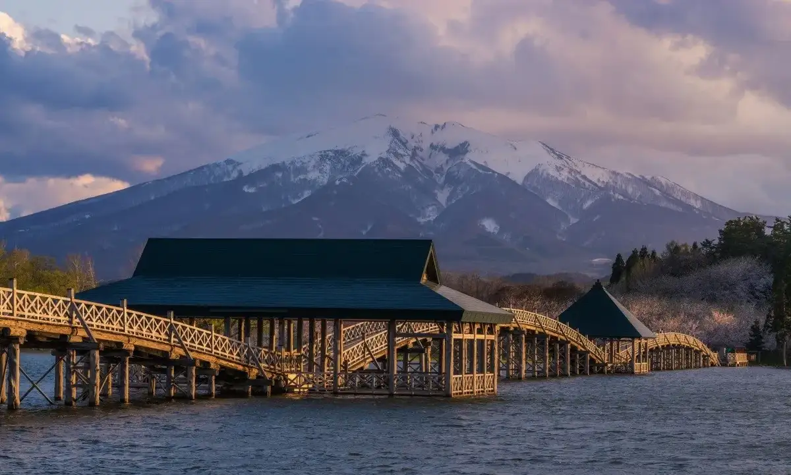
Stay
山田温泉旅館
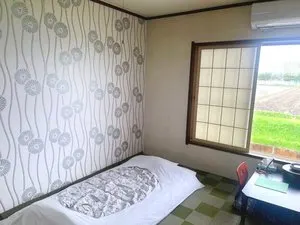
Yamadaonsen Ryokan
鶴の舞橋と岩木山 絶景の宿 つがる富士見荘
Tsuru No Mai Hashi To Iwakisan Zekkei No Yado Tsugaru Fujimi Sou
Dining
養老乃瀧 鶴田店
Yourou No Taki Tsuruta Mise
居酒屋ひまわり
Izakaya Himawari
WANOワイナリー
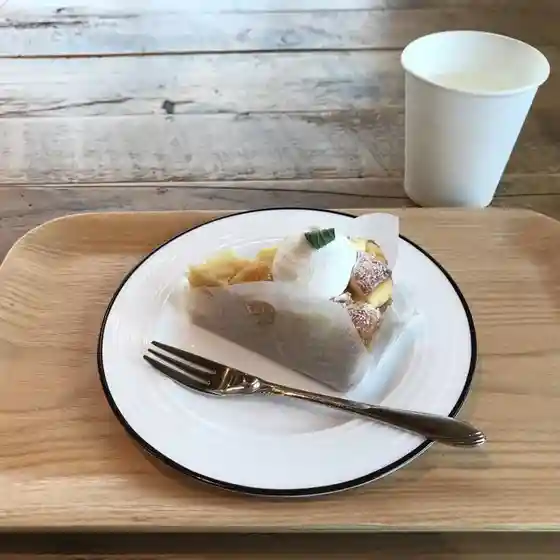
Wano Wainarii
しらかば
Shirakaba
つるのたまご
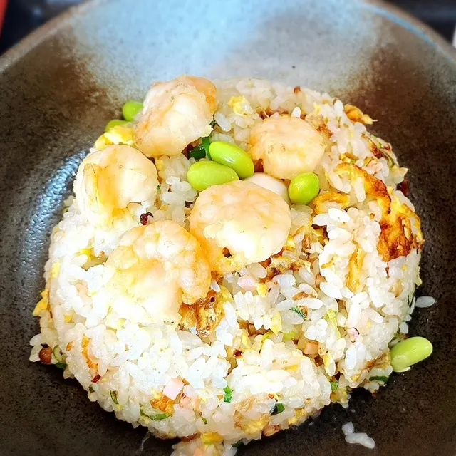
Tsurunotamago
玉喜や
Tamaki Ya
モビール デイリー ライフ プラス アルファ
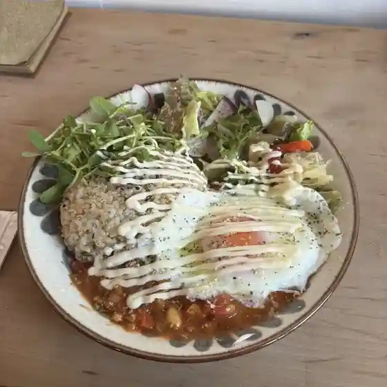
Mobiiru Deirii Raifu Purasu Arufa
金山菓子店
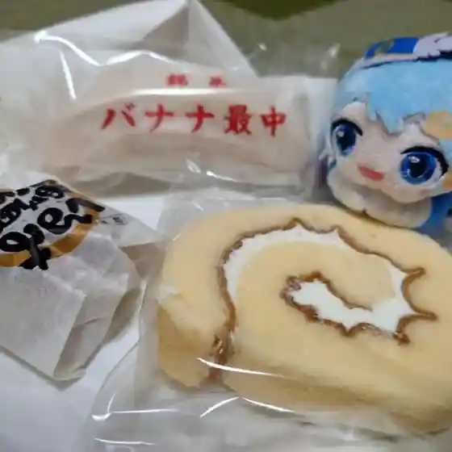
Kanayama Kashi Mise
下山食堂
Gezan Shokudou
澱と葉
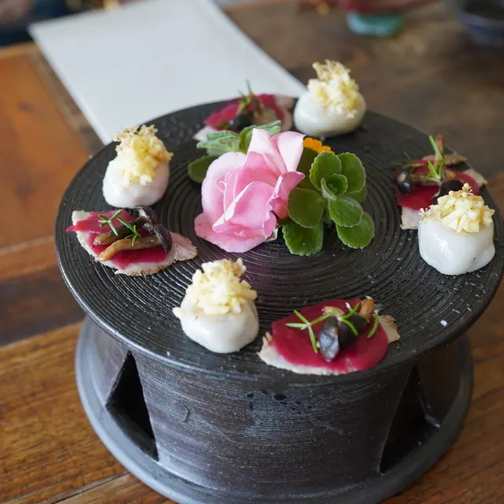
Den To Ha
やすた食堂
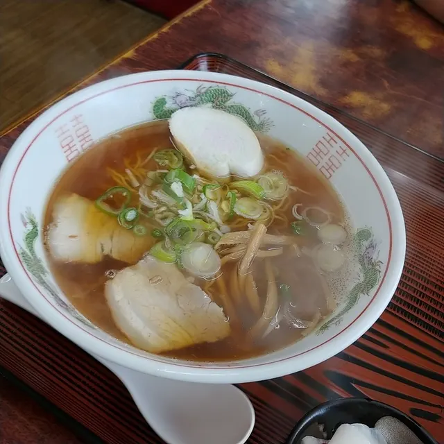
Yasuta Shokudou
棟方冷菓店
Munakata Reika Mise
福祉健康保養センター つがる富士見荘
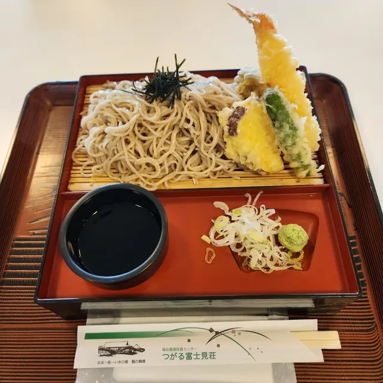
Fukushi Kenkou Hoyou Sentaa Tsugaru Fujimi Sou
めん屋 ごんじろう
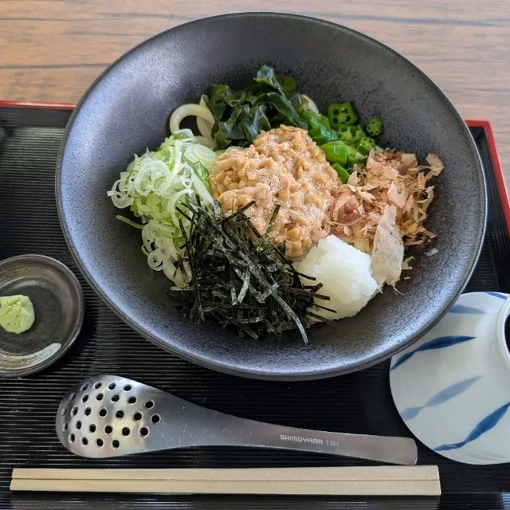
Men Ya Gonjirou
山田温泉
Yamadaonsen
焼肉レストラン 一心亭 鶴田店
Yakiniku Resutoran Isshin Tei Tsuruta Mise
小料理 ふく
Koryouri Fuku
カレッヂ
Karejji
かたらい
Katarai
RC SHOP
Rc Shop
珈琲いしむら
Koohii Ishimura
喰いしん坊
Kui Shin Bou
泰山庭・自然庭園
Taizan Niwa Shizen Teien
一戸仕出し店
Ichinohe Shidashi Mise
Sights
Tsuru-no-Mai Bridge
Tsuru-no-Mai Bridge passes over the Tsugaru Fujimi Lake with a reflection of Mt.
Roadside Station Tsuruta Tsuru no Sato Aruja
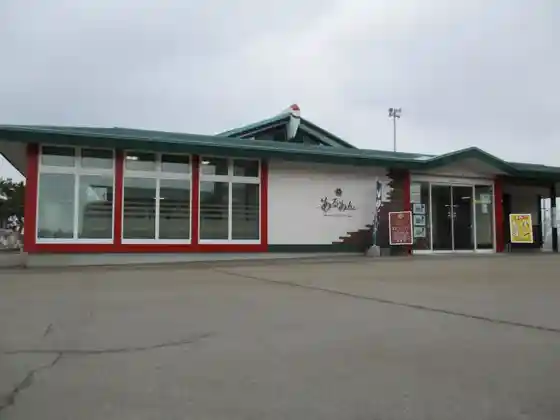
Roadside station selling Tsuruta produce, including Steuben grapes, Japan's top harvest.
Yuttari Onsen
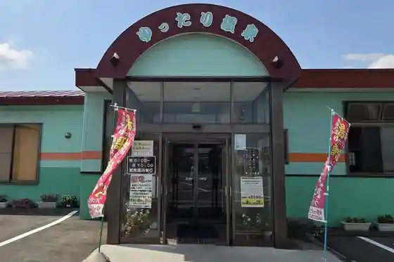
Chloride hot spring with a distinctive oily scent, plus family baths.
Fujimi Lake Park
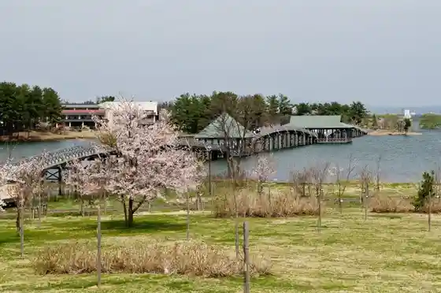
This sprawling, 12.4-hectare park is located at the edge of Tsugaru Fujimi Lake.
Red-crowned Crane Nature Park
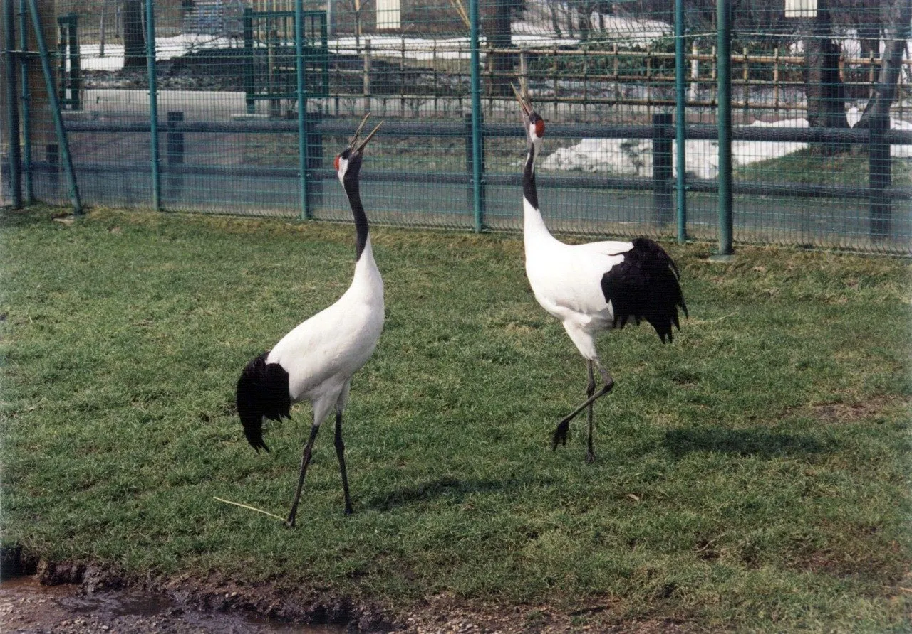
Park beside Fujimiko Park where red-crowned cranes can be seen year-round.
Tsugaru Winery
Tsugaru Winery, located in Tsuruta Town in the Tsugaru region of Aomori Prefecture, cultivates Steuben black grapes as well as four wine grape varieties including Pinot Noir and Chardonnay to produce wine.
Tsuru no Sato Furusato-kan
120-year-old thatched farmhouse relocated and opened as a history experience facility.
History and Culture Heritage Hall
Culture facility in a 1936 Aomori hiba wooden school building.
Tsuruta Station Information Center
Tourist information inside the plaza at JR Mutsu-Tsuruta Station.
Yayoi-ga Grain Art
Japan's only grain mosaic art made from natural uncolored seeds, on display at Roadside Station Tsuruta.